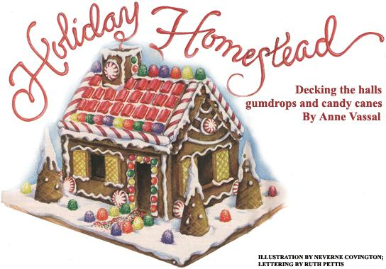
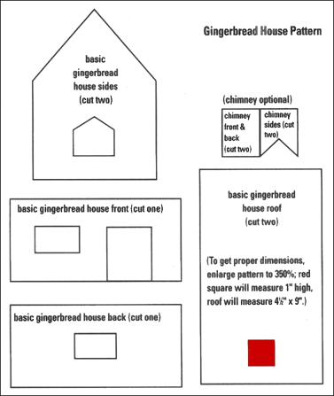
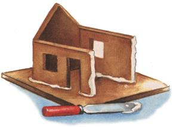

Every December, I w ould gaze at festive ginger-bread houses displayed in bakery windows, dreaming of creating such a masterpiece. I could only dream, since my gingerbread house experience was limited to sticking graham crackers together with frosting and creating a gingerbread tent. Until last year, that is, when I met Colleen, who not only owns a fancy cake bakery in Chicago called "Cake by Colleen," but is also a gingerbread house expert. I attended a mini-class at Colleen's bakery, where she shared some of her gingerbread house secrets.
Making my gingerbread house took a little time and patience, but it wasn't difficult. Not only is this a fun project for family members of all ages but the homemade house makes a great looking centerpiece for your holiday table. (My gingerbread house is sitting on my oak buffet surrounded by evergreen boughs.)
Ingredients for gingerbread and royal icing (see below).
A piece of thick cardboard (about 12" a 16"), covered with heavy-duty aluminum foil.
Assorted candies, cookies, cereal, etc., for decorating.
small cookie cutters: trees, teddy bears, gingerbread people (optional).
A card table covered with plastic to use as a work space, so the project doesn't interfere with family mealtime.
This project is easier with at least two helpers so schedule a day on your calendar (preferably in November or early December) when the gang's all there.
Ahead: Before you shop for ingredients, hunt around the house for candy, small cookies, goldfish crackers, mini-marshmallows, ice cream cones to use for evergreen trees, cereal such as bite-size frosted shredded wheat for roofing, small pretzels for fences, etc. I found some dried banana chips that I used to pave a stone path in front of the door and some pink wafer cookies that made cute window, shutters.
When shopping for candy, look for colorful, small items that aren't so heavy they'll slide off the roof (that was my biggest construction problem). Some good choices are M&M's, chocolate nonpareils, peppermints, Necco wafers, Twistettes (short licorice), Twizzlers (square licorice), Dots, Lifesavers, Gummy Bears. candy canes, small jelly beans, gumdrops and colored sprinkles. Try the bulk bins at supermarkets or candy stores. You'll only need a small amount of not more than five or six varieties.
Day 1: Prepare the dough and store in the refrigerator. Find a piece of cardboard for the base and cover with foil. Xerox the house pattern at your local copy center, enlarging it to 35% (the red square will be 1" high). Glue it onto poster board or a file folder and cut out the pattern pieces.
Day 2: Roll out the dough, cut out the gingerbread pieces and bake. Store the house parts for at least two days so the dough can harden. (You may want to bake the pieces on a Saturday morning and assemble the house the following Saturday.)
Day 3: Assemble and decorate the house.
The following recipe makes one batch of dough, but you'll need to make two separate batches for the house described here. This will leave you with some extra, but you can freeze it or the kids can make gingerbread people. Don't try any substitutions such as margarine instead of Crisco, because your house just might crumble.
1 cup Crisco vegetable shortening
3/4 cup white sugar
1 cup molasses
1 teaspoon vanilla
4 1/2 to 5 cups sifted unbleached white flour
1 teaspoon baking soda
1/2 teaspoon salt
1 teaspoon cinnamon
2 teaspoon ginger
1. Using an electric mixer, cream the short ening and sugar together in a large bowl until fluffy. Add rectangle, wrap in plastic wrap and the molasses and vanilla; mix well .Sift the flour into measuring cups (4 1/2 cups), using the flat side of a knife to scrape away excess flour. Put the flour, baking soda and spices into another bowl and mix with a spoon. Gradually mix these dry ingredients into the molasses mixture,. keeping the mixer on low speed. It may get difficult to mix as you add the last of the flour. If so, dump the dough onto a clean countertop and mix in the remaining flour with your hands. The dough should be stiff and workable, not dry and crumbly. If the dough is sticky, add a little more flour until you get the right consistency. (I needed 5 cups of flour.)
2. Divide the dough in half and shape it into two 1" -thick rectangles. Wrap in plastic wrap, place in a Ziploc bag and refrigerate for at least two hours or overnight. The dough can be kept for a few days in the refrigerator or frozen for up to a month (if the latter, thaw overnight in the refrigerator).
3. Repeat steps 1 and 2: mix, wrap and refrigerate a second batch of dough.
4. Preheat the oven to 350°F. Very lightly coat three flat cookie sheets with cooking spray or oil. If the cookie sheets have sides, turn upside down and oil the bottoms. Place one of the cookie sheets on top of a damp dish towel- oiled side up so it won't slide. Place one of the dough rectangles in the middle of the cookie sheet. Lightly flour a rolling pin and roll the dough out on the cookie sheet until it is 3/8"-thick (no thicker!) Make sure that the dough is rolled out evenly so the center isn't thicker than the edges. Place the house front (the door piece) and house side pattern onto the dough at least an inch apart. With a paring knife, cut out the house by tracing along the edges, but do not cut out the door or windows. Remove the excess dough from around the house pans. Roll the excess pieces into a rectangle, wrap in plastic wrap and refrigerate. Bake for 12 to 15 minutes until the edges are lightly browned and the center of each piece isn't spongy to the touch. Remove from oven and let cool for five minutes, then cut the door and windows.* Set the cookie sheet on a rack to cool for at least 30 minutes before carefully removing the house parts and placing them on racks to cool.
While the first batch is baking, roll out another dough rectangle on a cookie sheet. Cut out the house back and the other side (not the windows); bake and cool. Don't forget to cut out the windows after the dough has cooled for five minutes. Next, bake the two roof pieces. You don't have to make a chimney but if you do, place the pieces on a sheet with cookies because these parts require only 6 to 8 minutes to bake. The remaining dough can be used to make small cookie trees or gingerbread people to decorate around your gingerbread house or it can be frozen for another day. When all the house pieces and cookies have cooled thoroughly (at least 2 hours), lay them carefully, a layer at a time, in a large, covered plastic container, covering each layer with wax paper.
The frosting cannot be made ahead of time. Prepare shortly before you're ready to assemble the house and use it that day.
4 eggwhites
1/4 teaspoon cream of tartar
4 teaspoons water
about 6 cups sifted powdered sugar
Beat egg whites, cream of tartar and water with an electric mixer until frothy. Gradually add powdered sugar while continuing to beat until stiff peaks are formed (make sure it's stiff). Keep the bowl covered with a damp cloth or plastic wrap the frosting dries very quickly. Assemble the house using a butter knife to spread on the frosting. Refrigerate any left over frosting in a covered container. While you'll be able to use it as "glue" the next day, it will still be good for frosting cookies.
Lay out the cardboard base and the house parts so the tops (or good sides) of the pieces are facing up. Using a butter knife, spread a generous amount of icing on the bottom edges of both the house front and one side piece of the house. Spread frosting on both edges of the front and side pieces but not the roof edges. Let the icing dry for about three minutes before attaching the pieces. Press together the front piece and side pieces in the center of the cardboard base. I overlapped the house front and back pieces with both of the side pieces. Have a helper hold them up, keeping them firmly on the foil while you spread icing on the edges of the house back and the other side piece. Let them sit a few minutes, then attach to the rest of the house. While you're waiting, spread extra icing inside the house at the corners. Let the house dry for at least an hour before attaching the roof and chimney. This is a good time to lay out a candy roof design.
Here's where you can let your imagination run wild. Create a roof design by placing the candies or candy canes on the cardboard roof pattern. (Have the same amount of candies ready for the other roof piece.) You'll also want to figure out what you want to put on the house walls - candy canes next to the door, perhaps, or a mosaic pattern around the windows. Let the house dry for an hour and glue on the roof. Spread the icing generously onto the edges of the house and let it dry a few minutes. Put on the front side of the roof and have your helper hold it in place while you put extra icing under the roof from the inside. Put icing on the top edge of the back piece and lay it so the piece will stick to the roof front, holding on until it holds together by itself. Glue on the chimney the same way as you did the house walls.
While the roof is drying, you can decorate the walls. Generously dab each candy with icing and let it dry for a minute or so before sticking it to the house. If you want window shutters, slice four cookie wafers in half through the middle so they aren't so thick, then slice in half so you have eight shutters. When the roof glue has hardened, spread the icing on one side of the roof and let dry for five minutes. Starting at the top and working down row by row, decorate the roof. Repeat with the other side. If some candies slide a little, push them back into place. If any candies start to bleed color into the frosting, let the icing dry and attach them later with a dab more icing. When the icing is sticky-dry, you may want to pull clown a few icicles strands near the corners of the house.
When you're finished decorating the house, you can work on the landscaping. Frost all of the aluminum foil with a thick layer of icing. Let dry five minutes before inserting the decorations. You can use candy mint leaves for bushes, frost some ice cream cone trees and decorate with sprinkles, pave a pathway to the door or dab icing on the bottom of wine cookie people and prop them up with gumdrops. My friend, Karen, likes to put a miniature Santa with his sleigh and reindeers on the roof and tack on a string of miniature electric lights.
After you've finished, store any extra icing in a plastic container in the refrigerator in case you need to fix anything while your house is drying. Don't move it from its drying spot until the next day when it will be completely dry. Re-glue with icing any candy that may have fallen off the house.
After the holidays, you can wrap up your house and store it in a cool, dry place. Find a sturdy box with a .lid close in size to your gingerbread house and place the house carefully inside. Put the box in two heavy-duty plastic bags and close tightly with a twist tie. now your house is safe and dry, though not necessarily mice- and pet-proofed.
I recently retrieved my first ginger bread house, made a year ago November, from its storage spot in the basement. It survived unscathed by critters, but the frosting had dried and cracked and some of the candy pieces had fallen off. I did some minor repairs using Elmer's Glue, since the house was long -past edible any way. I also spruced the "grounds" up a bit with some fresh evergreen around the foundation. Even so, tire house will probably be ready for a mini-demolition team after this season.
If you don't want to store your house, you can of course always eat it: the gingerbread and frosting will stay good for a couple of weeks, the candy very nearly forever. Though after all the hard work you put into construction, you may not want to devour your masterpiece. After all, you can't have your house and eat it too.
|
 |
|
 |
|
 |
|
|